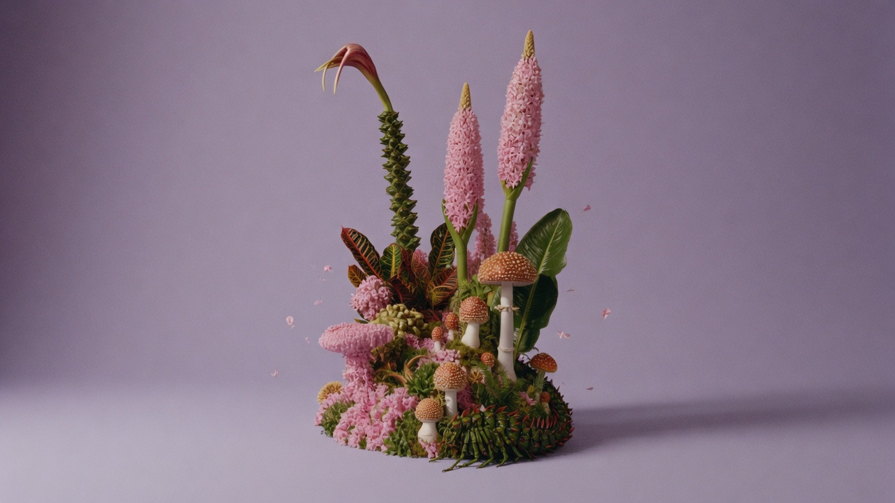
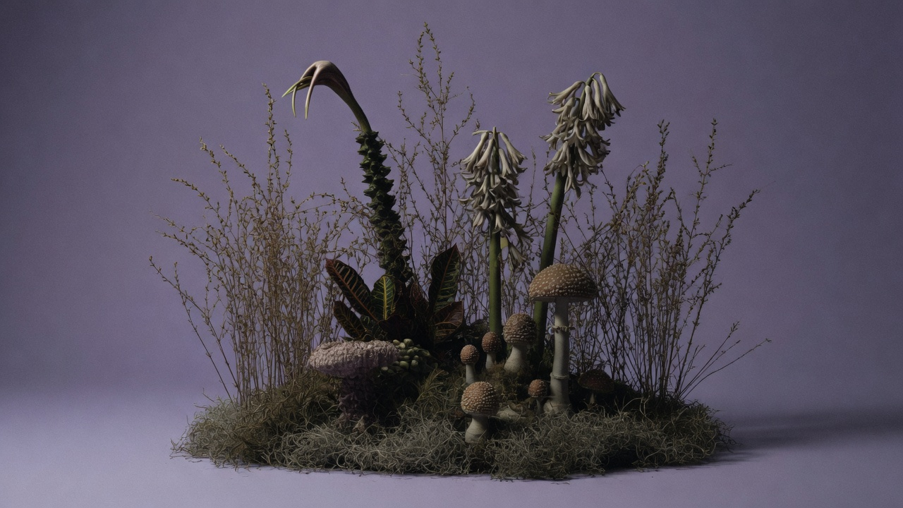
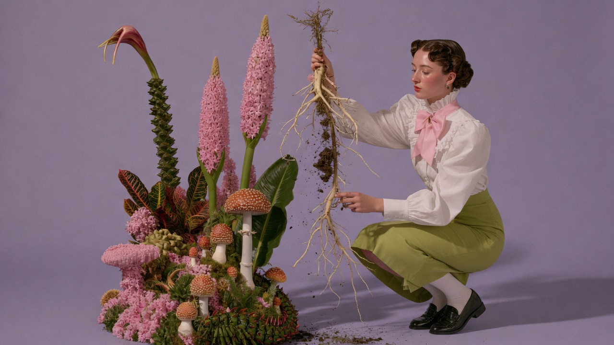
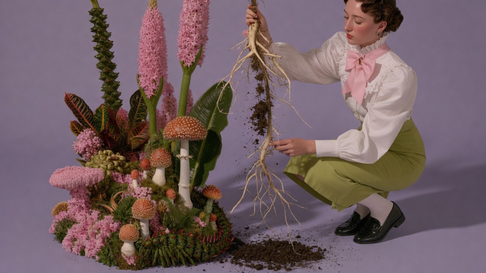
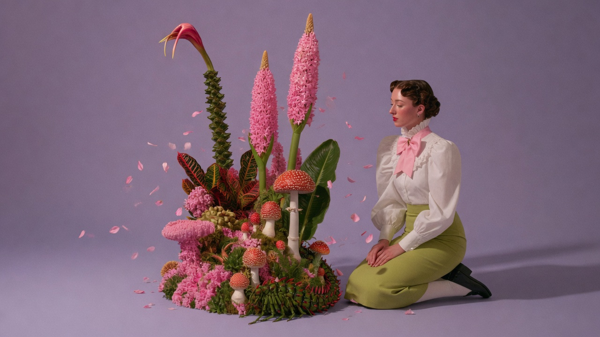

если сорняк отрастает снова
Гипнотерапия работает там, куда списки не доходят. Со сжатием в груди. С привычкой ждать плохое. С запретом себе хотеть.
Пришло. Отвечу как человеку, не как рассылка.